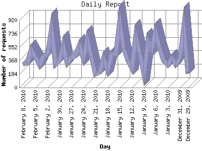

Analog 5.1
Analog 5.1 Report Magic 2.21
Report Magic 2.21The Daily Report identifies the activity for each day within the reporting period. Remember that one page hit can result in several server requests as the images for each page are loaded.

| Day | Number of requests | Number of page requests | |
|---|---|---|---|
| 1. | December 29, 2009 | 193 | 0 |
| 2. | December 30, 2009 | 838 | 1 |
| 3. | December 31, 2009 | 400 | 1 |
| 4. | January 1, 2010 | 315 | 0 |
| 5. | January 2, 2010 | 403 | 0 |
| 6. | January 3, 2010 | 307 | 0 |
| 7. | January 4, 2010 | 374 | 1 |
| 8. | January 5, 2010 | 545 | 1 |
| 9. | January 6, 2010 | 764 | 2 |
| 10. | January 7, 2010 | 520 | 0 |
| 11. | January 8, 2010 | 641 | 2 |
| 12. | January 9, 2010 | 192 | 0 |
| 13. | January 10, 2010 | 463 | 1 |
| 14. | January 11, 2010 | 704 | 1 |
| 15. | January 12, 2010 | 265 | 2 |
| 16. | January 13, 2010 | 374 | 2 |
| 17. | January 14, 2010 | 530 | 0 |
| 18. | January 15, 2010 | 912 | 2 |
| 19. | January 16, 2010 | 455 | 0 |
| 20. | January 17, 2010 | 459 | 2 |
| 21. | January 18, 2010 | 238 | 0 |
| 22. | January 19, 2010 | 401 | 1 |
| 23. | January 20, 2010 | 208 | 0 |
| 24. | January 21, 2010 | 178 | 2 |
| 25. | January 22, 2010 | 424 | 1 |
| 26. | January 23, 2010 | 662 | 1 |
| 27. | January 24, 2010 | 403 | 1 |
| 28. | January 25, 2010 | 575 | 0 |
| 29. | January 26, 2010 | 433 | 0 |
| 30. | January 27, 2010 | 410 | 1 |
| 31. | January 28, 2010 | 333 | 2 |
| 32. | January 29, 2010 | 584 | 0 |
| 33. | January 30, 2010 | 374 | 0 |
| 34. | January 31, 2010 | 317 | 1 |
| 35. | February 1, 2010 | 809 | 1 |
| 36. | February 2, 2010 | 455 | 0 |
| 37. | February 3, 2010 | 426 | 0 |
| 38. | February 4, 2010 | 308 | 1 |
| 39. | February 5, 2010 | 416 | 0 |
| 40. | February 6, 2010 | 516 | 2 |
| 41. | February 7, 2010 | 337 | 2 |
| 42. | February 8, 2010 | 313 | 0 |
Most active day April 18, 2008 : 565 pages sent. 912 requests handled.
Daily average: 0 pages sent. 447 requests handled.
This report was generated on February 14, 2010 21:18.
Report time frame March 31, 2008 17:55 to February 8, 2010 14:19.
| Web statistics report produced by: | |
| Analog 5.1 | Report Magic 2.21 |